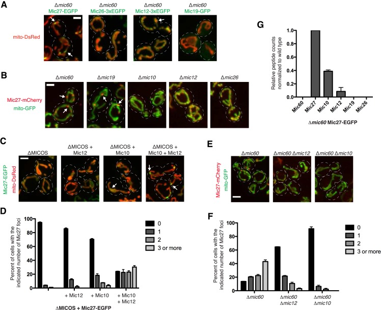

MIC10 subcomplex
A mitochondrial inner-membrane MICOS subcomplex containing Mic10, Mic12, Mic26 and Mic27, organized around Mic10 oligomers and involved in crista architecture. [DOI:10.1016/j.jmb.2018.04.037]

NCBITaxon:4932) · Jonathan R Friedman, Arnaud Mourier, Justin Yamada, J Michael McCaffery, Jodi Nunnari; CC BY, via PubMed Central · CC_BY_4_0 · source: PMC PMC4434539.1 fig3 · DOI:10.7554/eLife.07739Part of: MICOS complex (GO:0061617)
Components
| Component | Type | Part of / acts on | Grounding | Genes | Stoichiometry | Essential | Role |
|---|---|---|---|---|---|---|---|
| MICOS complex subunit Mic10 | Protein | part of | InterPro:IPR007512 | MIC10 | Oligomeric scaffold of the inner-membrane subcomplex.
| ||
| MICOS complex subunit Mic12 | Protein | part of | InterPro:IPR031463 | MIC12 | Subunit that promotes focal assembly of the Mic10-Mic27 organizing center.
| ||
| MICOS subunit Mic26, fungi | Protein | part of | InterPro:IPR033181 | MIC26 | Fungal subunit that counteracts stabilization of higher-order Mic10 oligomers.
| ||
| MICOS complex subunit MIC27 | Protein | part of | InterPro:IPR061953 | MIC27 | Yeast subunit that stabilizes higher-order Mic10 assemblies.
|
Taxonomic distribution
NCBITaxon:4932Saccharomyces cerevisiae — COMMON: Demonstrated in budding-yeast mitochondrial MICOS using YPH499 derivatives; no universal fungal or eukaryotic distribution is asserted. [DOI:10.1016/j.jmb.2018.04.037]
Canonical examples
NCBITaxon:4932Saccharomyces cerevisiae — YPH499 derivatives supply mitochondrial purification and cross-linking evidence. The separate 2015 fluorescence experiments use W303 derivatives, not the S288c proteins consulted for family lookup. [DOI:10.1016/j.jmb.2018.04.037]
Functions
- inner mitochondrial membrane organization
GO:0007007— Contributes a Mic10-based organizing module to the MICOS machinery that maintains mitochondrial crista architecture.DOI:10.7554/elife.07739Genetics, microscopy and Mic27 immunopurification distinguish an independent organizing center from the Mic60-containing module. Junction localization of Mic27 foci is inferred from proximity to crista markers, not resolved by direct immuno-electron microscopy.DOI:10.1016/j.jmb.2018.04.037Antagonistic Mic26-Mic27 effects regulate the Mic10 oligomeric scaffold.
Mechanism graphs
Mic10 oligomer regulation and conditional Mic27 focal assembly (ASSEMBLY)
Protein-specific perturbations distinguish regulation of Mic10 oligomers from focal assembly of a Mic27-containing organizing center.
| Subject | Predicate | Object | Evidence |
|---|---|---|---|
| MICOS complex subunit Mic10 | oligomerizes into | Higher-order Mic10 assemblies |
|
| MICOS subunit Mic26, fungi | destabilizes | Higher-order Mic10 assemblies |
|
| MICOS complex subunit MIC27 | stabilizes | Higher-order Mic10 assemblies |
|
| MICOS complex subunit Mic10 | is required for | Focal Mic27-containing assemblies without Mic60 |
|
| MICOS complex subunit Mic12 | promotes | Focal Mic27-containing assemblies without Mic60 |
|
Discussions
- INTERPRETATION (RESOLVED): Reconcile the four-subunit MIC10 module with the three-protein organizing center seen in deletion strains. The 2015 Mic27/Mic12/Mic10 assembly does not establish that Mic26 is absent from the normal module; the experiments ask which proteins sustain focal assembly without other MICOS subunits.
- INTERPRETATION (RESOLVED): Distinguish environmental assembly dependencies from constituent identity. Genetic cardiolipin dependence and proximity to ER contact sites do not identify additional stoichiometric components of this protein module.
- CURATION_TODO (OPEN): Resolve intact native subcomplex architecture, stoichiometry and direct cardiolipin-binding interfaces. Native-gel migration, cross-linking and fluorescent foci do not establish one atomic structure or copy number. Direct cardiolipin binding to Mic10 is proposed from the perturbation data rather than independently measured in the cited 2018 study.
Evidence
DOI:10.1016/j.jmb.2018.04.037Rampelt et al. (2018), Assembly of the Mitochondrial Cristae Organizer Mic10 Is Regulated by Mic26-Mic27 Antagonism and Cardiolipin. Main text, captions and Figures 1-4 inspected in the institutional publisher-version PDF.DOI:10.7554/elife.07739Friedman et al. (2015), MICOS coordinates with respiratory complexes and lipids to establish mitochondrial inner membrane architecture. Relevant Results, Discussion, strain methods and Figure 3 inspected in checksum-verified PMC4434539 version 1.DOI:10.1083/jcb.202003024Tirrell et al. (2020), MICOS subcomplexes assemble independently on the mitochondrial inner membrane in proximity to ER contact sites. Subcomplex-localization and ERMES-perturbation Results plus strain methods inspected in checksum-verified PMC7545361 version 1.GO:0098800Broader is-a parent: inner mitochondrial membrane protein complex.GO:0061617Containing MICOS complex; not an exact synonym or is-a parent of this subassembly.
Curation history
2026-10-04T22:30:30Zcodex · CREATED_RECORD — Scaffolded by scripts/new_record.py2026-10-04T22:31:41Zcodex · EXPANDED_RECORD — Added four verified protein families, bounded yeast examples, inner-membrane organization, five experimental assembly edges and explicit conditional-core, lipid and native-architecture limits.2026-10-04T22:32:05Zpmc_oa · ADD_IMAGE — Added PMC4434539.1 fig3; version, CC licence, JATS figure identity and media md5 verified through the PMC OA S3 dataset.